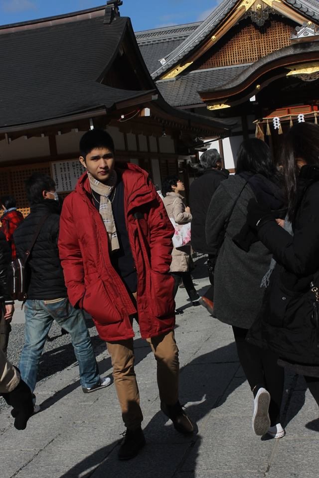
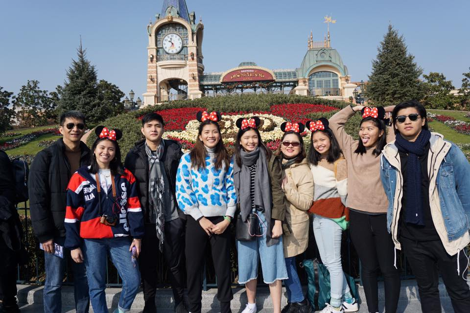
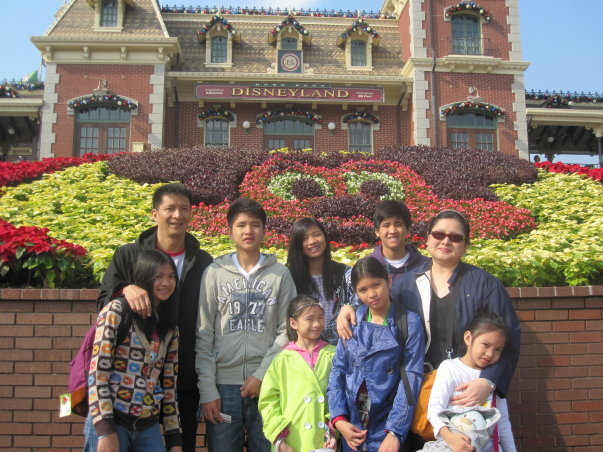
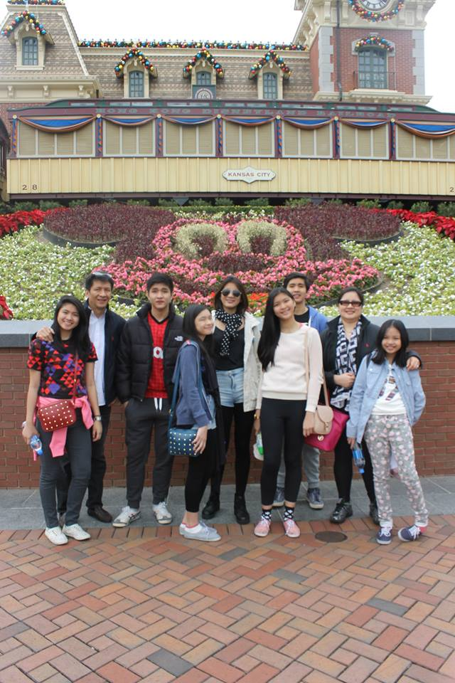

Where have i been?
I have been blessed with the opportunity to travel the world thanks to my parents. The following are the countries i have been to:
Japan
- Japan by far is the best country i have been to, people are respectful, Weather is nice, it is clean, the food is good, transportation is amazing. I will definitely return to this country

China
- I have been to japan twice, the first time was in beijing and most recent was in Shanghai, i honestly do not like it there because the people are rude and it is not clean

Hong Kong
- I have been to Hong Kong twice. It is a nice country and i wish to come back soon


This site was designed and developed by Arvidas Kio M. Dy
Email comments and suggestions to
arvidas_dy@dlsu.edu.ph